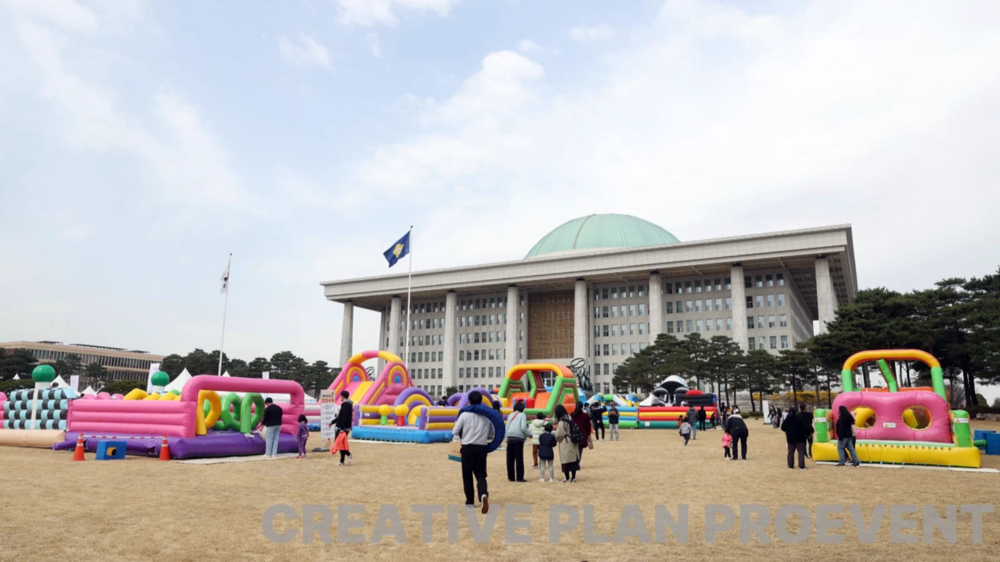
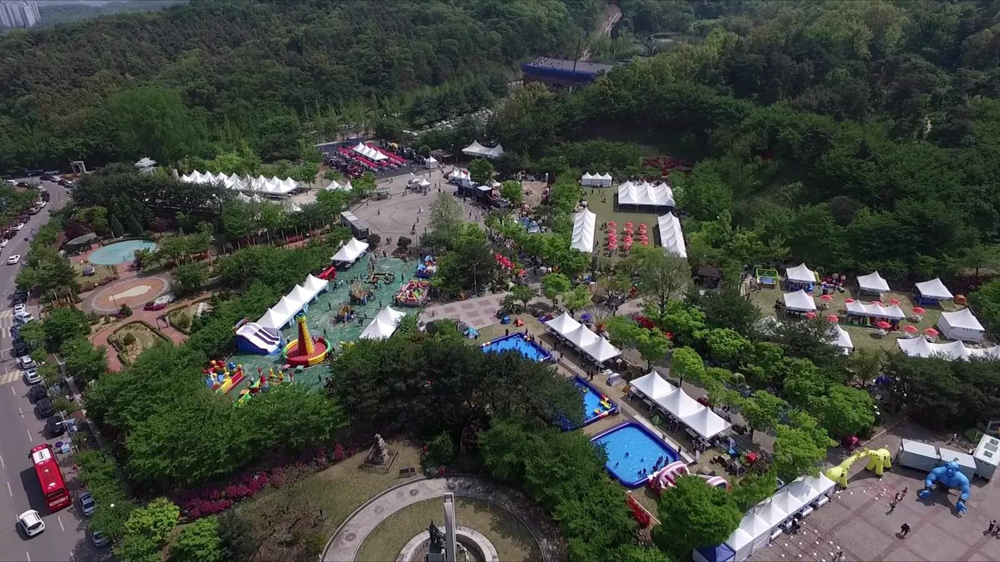
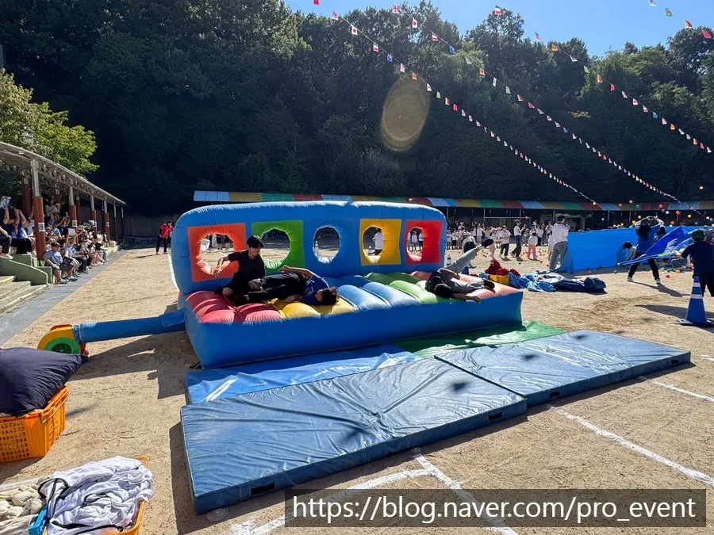

영등포 에어바운스 놀이존은 기구를 몇 개 세우느냐보다 줄 서는 자리와 안전 요원 배치가 먼저입니다. 아이들이 몰리는 시간에 줄이 엉키면 사고 위험이 커지고, 바람이 세지면 바로 멈출 수 있어야 합니다. 프로이벤트는 영등포구 여의도의 국회 개방행사를 기획 · 대행했고(국회 개방행사 기획 및 대행 (2024)), 같은 행사의 에어바운스 놀이존 대행 (2026)도 맡았습니다. 그 현장 기준으로 놀이존 준비 순서를 정리했습니다.

- 놀이존은 기구 배치보다 대기 줄 · 출입 동선 · 보호자 자리를 먼저 그립니다.
- 기구마다 안전 요원을 두고 키 · 나이 · 동시 인원 같은 이용 규칙을 입구에 붙입니다.
- 바람이 세지면 이용을 멈추고, 기상청 강풍주의보 기준(풍속 14m/s 이상 또는 순간풍속 20m/s 이상)보다 훨씬 약한 바람에서도 기구가 흔들리면 멈춥니다.
- 에어바운스는 관광진흥법상 유원시설의 유기기구로 관리되므로 기구의 검사 여부를 확인합니다.
1. 영등포 에어바운스 놀이존, 배치도부터 그립니다
놀이존 배치도는 기구 위치만 찍는 그림이 아닙니다. 기구마다 입구와 출구, 대기 줄이 설 자리, 보호자가 지켜볼 자리를 함께 그려야 합니다. 출구로 나온 아이가 다른 기구의 대기 줄을 가로지르지 않도록 한 방향으로 흐르게 만드는 것이 핵심입니다. 영등포(여의도 · 국회 · 문래동 · 당산동 등)에서도 행사장이 공원 · 광장이면 다른 부스와 공간을 나눠 쓰므로, 주최 측 전체 배치도를 받아 놀이존 구역을 먼저 확정합니다.
| 그릴 것 | 기준 |
|---|---|
| 기구 위치 | 기구 사이 통로 확보, 송풍기 위치 표시 |
| 대기 줄 | 기구 앞 직선 줄, 줄 끝 안내판 |
| 출입 동선 | 입구와 출구를 반대쪽으로 |
| 보호자 자리 | 기구가 보이는 그늘 · 의자 |
| 전원 | 송풍기 전원 위치와 전선 덮개 |
| 본부 | 안전 요원 교대 · 미아 안내 · 구급 용품 |
2. 국회 개방행사 놀이존에서 확인한 것
국회 개방행사는 넓은 잔디 광장에 가족 단위 방문객이 오가는 행사였습니다. 이런 현장에서는 놀이존이 행사장 안의 작은 행사장이 됩니다. 기구 수보다 운영 시간 동안 줄을 관리하는 사람이 몇 명인지가 더 중요했습니다.

- 운영 시간 내내 기구마다 안전 요원이 붙어 있어야 합니다. 교대 시간도 시간표에 넣습니다.
- 몰리는 시간(점심 직후 · 공연 직후)에는 1회 이용 시간을 줄여 줄을 짧게 유지합니다.
- 미아가 생기면 본부로 모이는 방식을 입구 안내판과 안내 방송으로 알립니다.
- 행사가 끝나면 기구의 바람을 빼는 동안 접근을 막는 줄을 칩니다.
3. 이용 규칙과 안전 요원
한국소비자원은 에어바운스가 「관광진흥법」상 유원시설의 유기기구로 관리되고, 크기에 따라 안전성검사 대상과 비대상으로 나뉜다고 알렸습니다. 소비자원 조사에서는 설치 · 관리 실태가 미흡하다는 결과도 나왔습니다. 정책브리핑에 따르면 안전성검사 대상이 아닌 유기기구 가운데 사고가 잦은 미니에어바운스 등은 2년마다 정기 확인검사를 받도록 했습니다. 그래서 놀이존을 맡길 때는 기구의 검사 여부를 확인하고, 현장 규칙을 눈에 띄게 붙입니다.
| 규칙 | 현장에서 하는 일 |
|---|---|
| 이용 대상 | 키 · 나이 기준을 입구 안내판에 표시 |
| 동시 이용 | 한 번에 들어가는 아이 수를 기구별로 정함 |
| 신발 · 소지품 | 신발 벗는 자리, 날카로운 물건 금지 |
| 이용 시간 | 1회 시간을 정해 호루라기 · 안내로 교대 |
| 보호자 | 어린 아이는 보호자가 기구 앞에서 지켜봄 |
4. 바람 · 비 기준을 미리 정합니다
에어바운스는 바람에 약합니다. 기상청 기상특보 발표기준으로 강풍주의보는 육상에서 풍속 14m/s 이상 또는 순간풍속 20m/s 이상이 예상될 때 발표됩니다. 그러나 놀이존은 그보다 훨씬 약한 바람에서도 기구가 흔들리면 이용을 멈추는 것이 안전합니다. 「기구가 흔들리면 즉시 이용 중지 → 아이 하차 → 고정 확인」 순서를 안전 요원 모두가 알고 있어야 합니다.
- 전날 · 당일 아침 예보를 보고 운영 여부를 담당자와 함께 정합니다.
- 비가 오면 기구 바닥이 미끄러워 이용을 멈추고, 그친 뒤 물기를 닦고 다시 엽니다.
- 송풍기와 전선은 물이 고이지 않는 자리에 두고 덮개를 씌웁니다.

5. 영등포 놀이존 준비 일정
영등포구청까지 서울 본사에서 차로 약 15분 · 15.4km 입니다. 다만 큰 행사 날에는 주변 교통 통제가 있을 수 있어, 기구 반입 시간과 차량 진입 허가를 주최 측과 미리 맞춥니다.
- 4주 전: 놀이존 구역 · 운영 시간 · 예상 이용 대상 확정.
- 3주 전: 기구 종류 · 수량, 배치도 초안, 전원 확인.
- 1주 전: 안전 요원 수 · 교대표, 이용 규칙 안내판, 반입 허가.
- 전날: 예보 확인, 운영 여부 1차 판단.
- 당일: 설치 → 고정 · 점검 → 운영 → 바람 빼기 · 철수.
6. 놀이존 견적 항목표
자동 견적서에서 항목을 골라 보내 주시면 담당자가 확인 후 1영업일 안에 1차 제안과 견적으로 답합니다. 에어바운스 · 천막 · 의자 · 테이블 같은 행사 물품 대여도 함께 진행합니다.
| 항목 | 확인할 것 |
|---|---|
| 에어바운스 | 기구 종류 · 수량 · 운영 시간 |
| 워터슬라이드 · 물놀이 풀 | 여름 행사 여부, 급수 · 배수 |
| 천막 | 본부 · 보호자 그늘 |
| 의자 · 테이블 | 보호자 자리 · 본부 |
| 행사 스태프 | 기구별 안전 요원 · 교대 |
| 운반 · 설치 인건비 | 반입 시간 · 철수 시간 |
국회 개방행사 기록은 행사 이야기 — 국회 개방행사, 지역 안내는 영등포 행사 안내에 있습니다. 어린이 중심 행사는 양천 어린이 행사 글도 참고하세요.
자주 묻는 질문
에어바운스만 빌릴 수 있나요?
에어바운스 대여는 프로이벤트가 하는 일입니다. 기구만 필요한 경우에도 설치 · 안전 요원 구성을 함께 상담합니다.
바람이 불면 운영하지 않나요?
기구가 흔들리면 즉시 이용을 멈추고 고정 상태를 확인합니다. 전날 예보를 보고 운영 여부를 담당자와 함께 정합니다.
놀이존 안전 요원은 몇 명이 필요한가요?
기구마다 한 명 이상이 기본이고, 교대와 본부 인원은 운영 시간과 기구 수에 따라 정합니다.